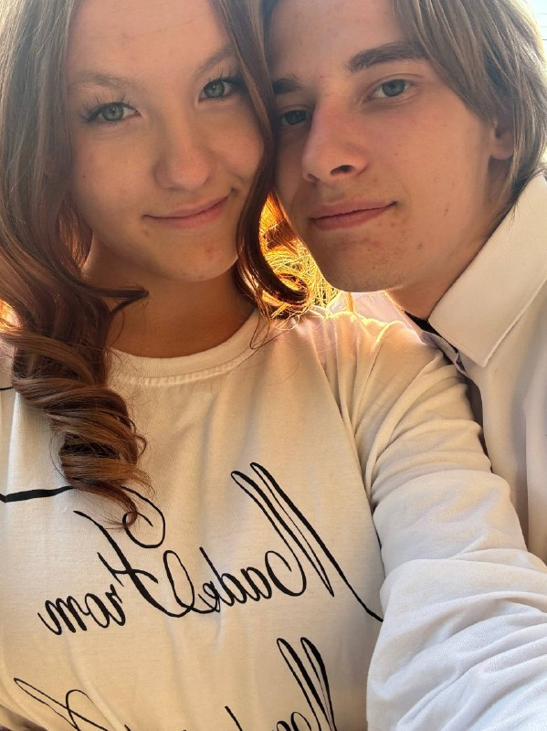
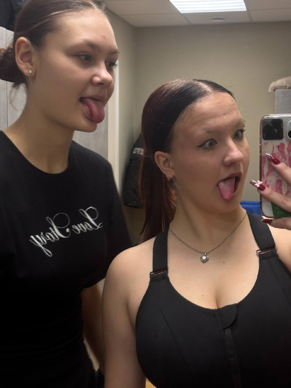
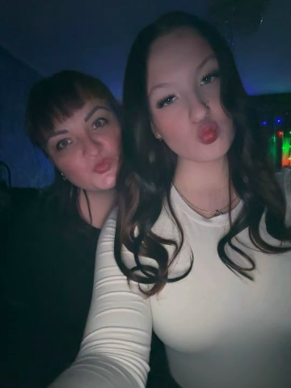

Обо мне
Я как личность
Я Арианна, мне 16. Учусь в ЗабКУКе на хореографию. Я выбрала эту профессию по зову сердца.
Опыт в танцах у меня ровно 10 лет и мой творческий путь начался как раз таки в стенах ЗаБКУКа. Сюда я начинала ходить на танцы, а дальше мой тренер создала студию, и я перешла к ней. С этого момента, я в танцах.
Мои навыки
Глазами близких
Я спросила у своих друзей и семьи, с чем или с кем я у них ассоциируюсь. Вот что они ответили.

«Ты потрясающе танцуешь, с тобой комфортно, как дома, и ты умеешь оставаться собой несмотря ни на что. Твоя безграничная доброта и искренность — это то, что я ценю больше всего».
— Ваня

«Ты всегда легка на подъем и готова к любой активности. Но главное — ты потрясающе умеешь поддерживать и чувствуешь людей насквозь. С тобой связаны лучшие лагерные воспоминания!»
— Света

«Ты невероятно целеустремленная и ответственная — всегда добиваешься своего и идешь до конца. Но для меня ты навсегда останешься той самой девочкой с белыми кудряшками, которой я горжусь каждый раз, когда вижу твои горящие глаза на сцене».
— Мама
Мои увлечения
Современная хореография
Очень люблю заниматься стилем танца - Контемпорари
Музыка
Люблю слушать музыку и представлять сценарии под нее. Я меломан.
Игровая индустрия
Гейминг не только как отдых, но и продумывание стратегий в поле игры.
Лучшие моменты в моей жизни
Готова к новым вызовам и проектам.
Спасибо за внимание!